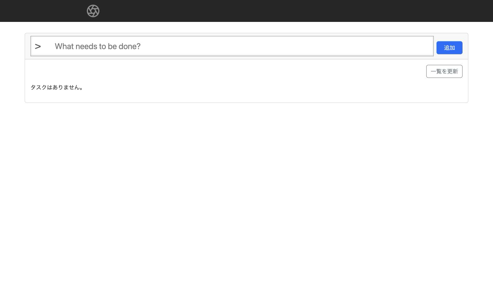
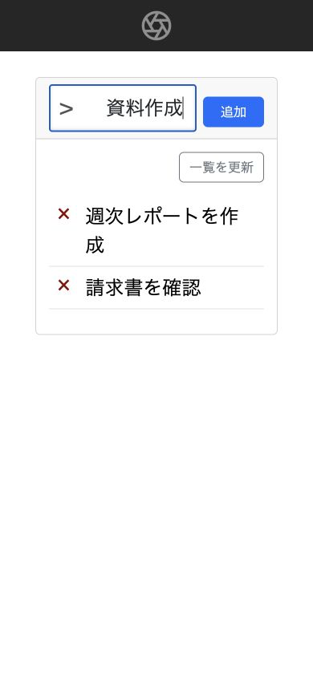
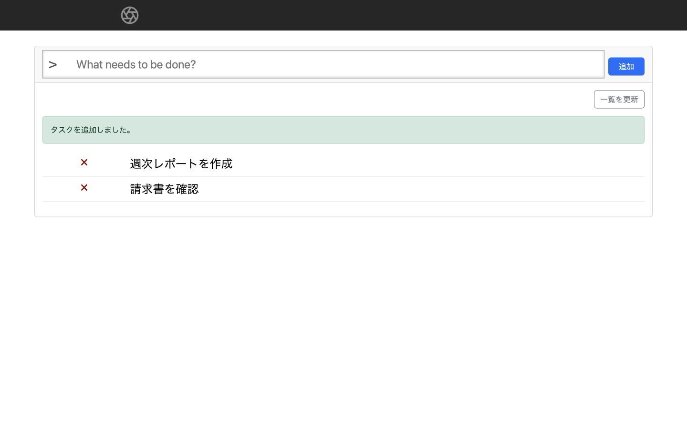
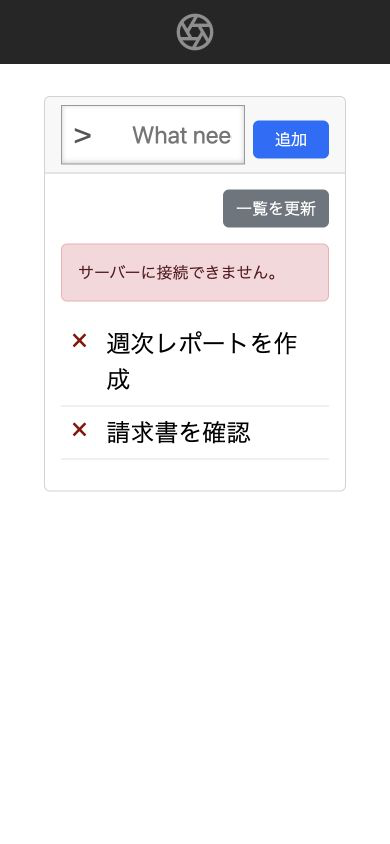

01 空状態
初期取得が成功し、タスクが0件の場合。「タスクはありません。」と次の操作を明示します。
- 目的
- 未登録状態の案内
- 主操作
- タイトル入力／一覧更新
- API
GET /tasks
認証なしTodo Web APIを利用する単一画面アプリの、主要状態・API対応・操作フローです。

初期取得が成功し、タスクが0件の場合。「タスクはありません。」と次の操作を明示します。
GET /tasks
タイトルを入力した状態。送信すると作成APIを呼び、成功後に一覧を再取得します。
POST /tasks → GET /tasks
作成成功メッセージと最新一覧。各行の×ボタンから対象タスクを削除できます。
DELETE /tasks/{id} → GET /tasks
通信失敗時は既存一覧を保持しつつエラーを表示。失敗した操作を再実行できます。
GET・POST・DELETE| 操作 | API | 成功時 | 失敗時 |
|---|---|---|---|
| 初期表示／一覧を更新 | GET /tasks | 200 一覧または空状態 | エラーを表示し再試行可能 |
| 追加 | POST /tasks | 201 後に一覧を再取得 | 入力を保持してエラー表示 |
| 削除 | DELETE /tasks/{id} | 204 後に一覧を再取得 | 既存一覧を保持してエラー表示 |